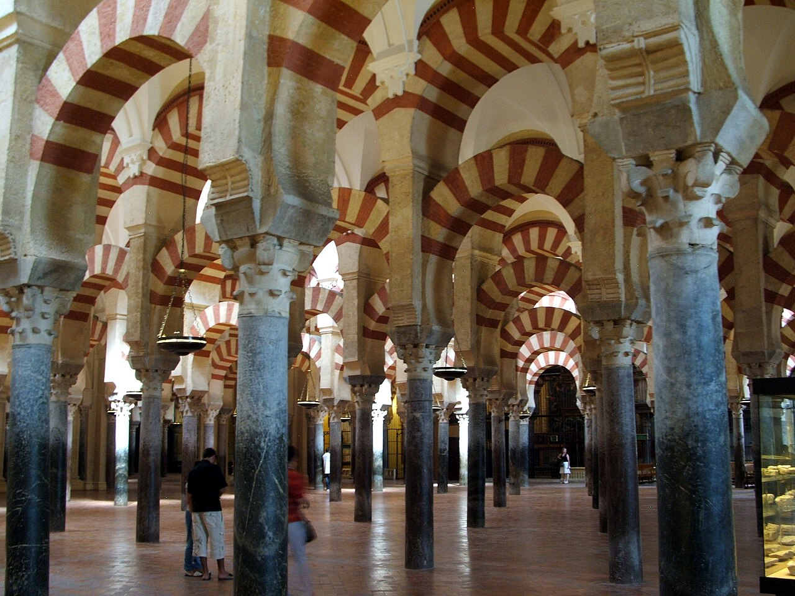
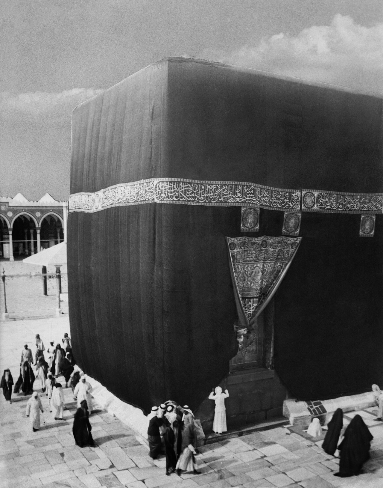
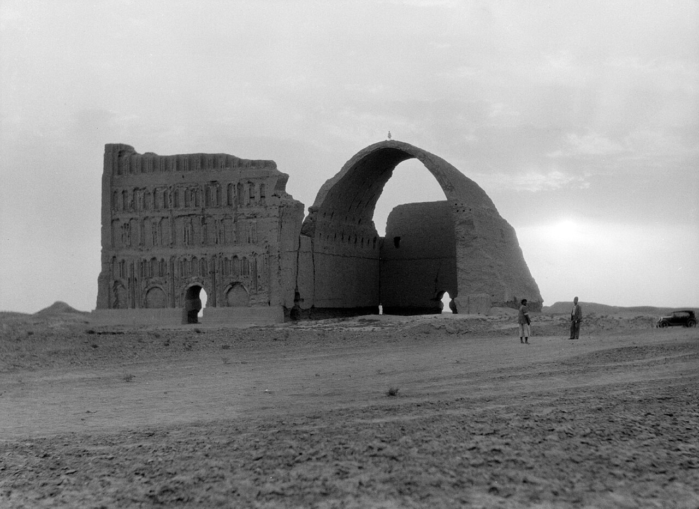
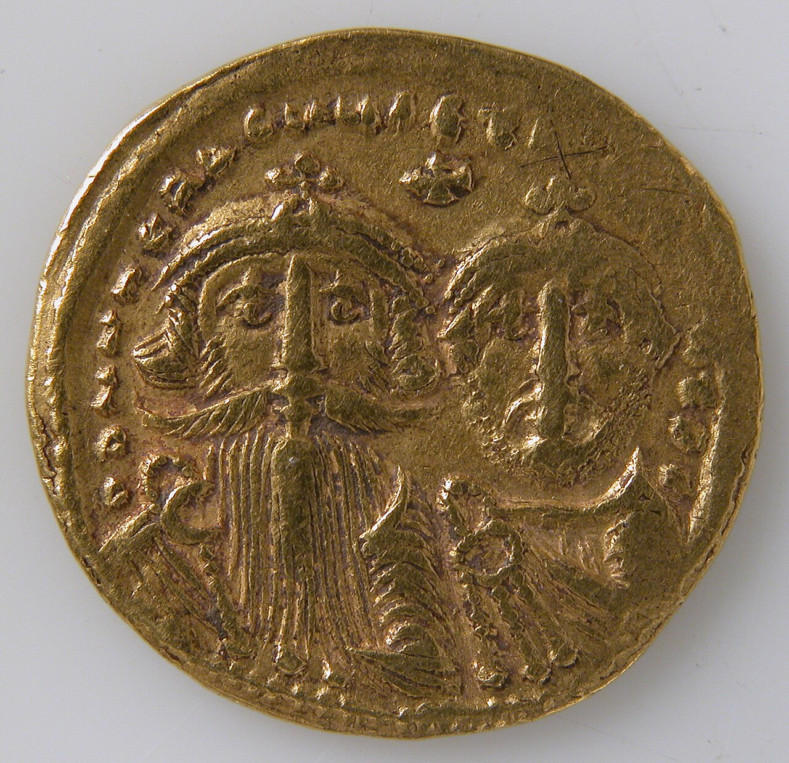
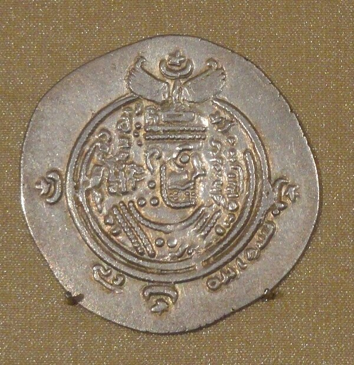
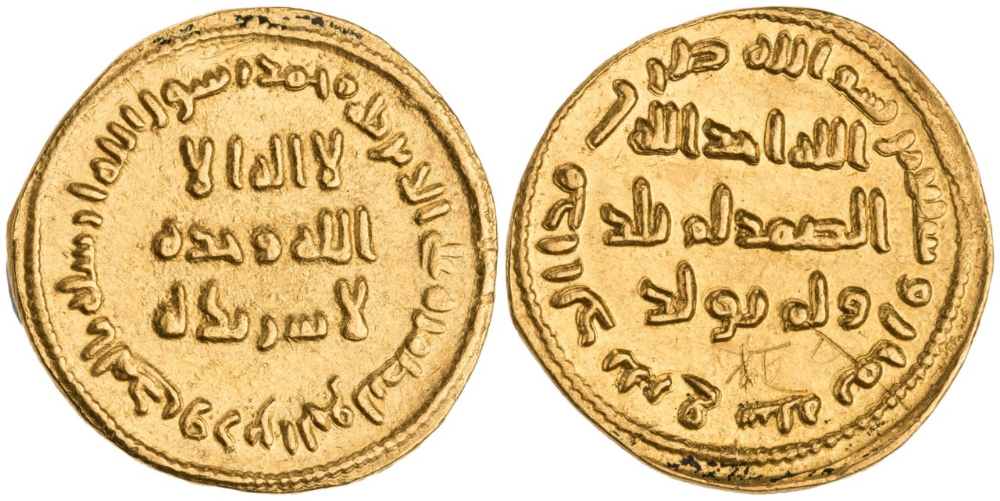
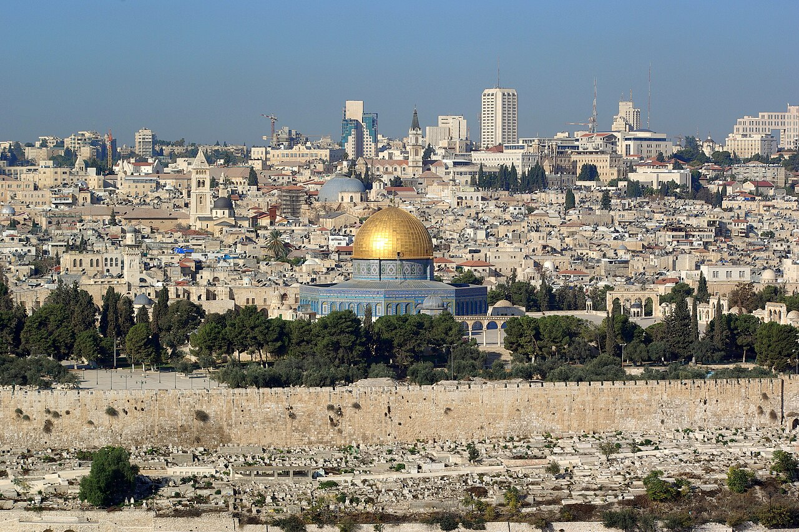
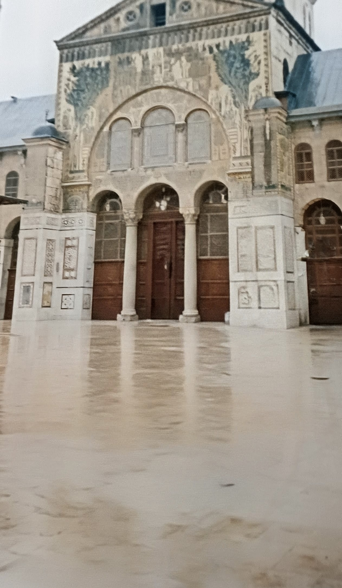

歴史・地理 History & Geographyイスラム教は、 なぜ100年で 大帝国を 築けた？ 610年ごろ、アラビア半島の町メッカで始まった信仰は、100年あまりで、大西洋から中央アジアまで広がる国をつくりました。決め手は、軍隊の強さだけではありません。2枚の地図と古い硬貨で、その速さのわけをたどってみませんか。
2026.11.10 UP 約8分で読める 文：SOMOSOMO編集部
写真：スペイン・コルドバの大モスク（785年〜）／PerryPlanet（2011年、パブリックドメイン）
Previously
前回は、西のローマ帝国で、476年に最後の皇帝が退いた話でした。けれども東のローマ帝国は、コンスタンティノープルを都にして続きます。その東の隣には、ササン朝ペルシアがいました。
いまのイラク、バグダードの南東。637年3月、ササン朝ペルシアの都クテシフォンが、アラビア半島から来た軍勢の手に落ちました。ササン朝は3世紀から400年あまり続き、ローマと張り合ってきた大国です。攻めた側が信じる預言者ムハンマドが、故郷の町を離れたのは、わずか15年前のことでした。
ムハンマドが亡くなった632年から100年ほどのうちに、イスラム教を掲げる国は、西はイベリア半島（いまのスペインとポルトガル）から、東は中央アジアのサマルカンドやインダス川の下流まで広がります。砂漠の小さな共同体は、なぜこれほど速く大帝国になれたのでしょうか 。
In a word
1つになったアラブが疲れた大国 を破り、土地の信仰としくみを残した から。
01
One Community
争う部族を、 1つの信仰が まとめた
6世紀のアラビア半島は、大部分が砂漠です。人々は血のつながりでまとまる部族に分かれ、オアシスの町や、らくだを連れた移動の暮らしを送っていました。部族どうしの争いは、珍しくありませんでした。
西の海に近いメッカには、カアバと呼ばれる聖所がありました。伝承によれば、そこには多くの神々の像が置かれ、周りでは争いが禁じられていました。そのため、メッカは巡礼の地として、また商売の町として栄えたとされます。

メッカのカアバ 1910年ごろのカアバです。黒い布で覆われた立方体の建物で、いまはイスラム教でもっとも大切な聖地になっています。足もとの人々とくらべると、その大きさがわかります。写真：Kaaba (1910) ／G. Eric・Edith Matson（1910年ごろ、パブリックドメイン）
ムハンマドは570年ごろ、このメッカの有力な部族に生まれ、隊商（らくだの列で品物を運ぶ商人の一団）の商売にかかわりました。イスラム教の伝承では、610年、40歳のころ、町の外の洞窟で神の言葉を初めて授かったとされます。
ムハンマドは、神はただ1つだと説きました。けれども、多くの神々をまつるメッカの有力者たちは反発し、信者への迫害が強まります。622年、ムハンマドと信者たちは、北のヤスリブという町へ移りました。この移住をヒジュラといい、のちにイスラム暦（月の満ち欠けで数える暦）の元年とされます。
ヤスリブ（のちのメディナ）では、2つのアラブの部族が100年近く争っていました。ムハンマドは争いを裁く指導者として迎えられます。
伝わる文書（メディナ憲章）によれば、アラブとユダヤ教徒の部族は、イスラム教徒と争わず、勝手にメッカの側と手を結ばないと約束しました。血筋ではなく、信仰でつながる共同体 の始まりでした。
630年、ムハンマドはメッカに入り、カアバの神々の像は壊されたと伝えられます。632年にムハンマドが亡くなると、後継者（カリフ）のアブー・バクルが、従わなくなった部族を戦いで従わせました。633年3月には、アラビア半島のほぼ全体が、メディナの1人の指導者のもとにまとまります。
02
Two Tired Giants
隣の2大国は、 26年の戦争で 疲れきっていた
アラビア半島の北には、2つの大国が並んでいました。西は、前回見た東ローマ帝国（教科書でいうビザンツ帝国）。東は、いまのイランとイラクを治めたササン朝です。ササン朝は、ペルシアの古い宗教ゾロアスター教を国の柱にしていました。
602年、この2つの国のあいだで、最後にして最大の戦争が始まります。ササン朝はシリアに攻め入り、614年にエルサレムを、619年ごろにはエジプトまで奪いました。エジプトの小麦に頼っていたコンスタンティノープルでは、その攻撃が始まった618年に、市民に無料で配っていた小麦が止まっています。
反撃に出た東ローマの皇帝ヘラクレイオスは、627年にササン朝の奥深くで勝ち、翌628年、ササン朝の王は自分の国の軍に倒されました。戦争は東ローマの勝ちで終わります。けれども、どちらの国も、兵とお金を使い果たしていました。


2つの大国の、戦いのあと 左は、クテシフォンに残るササン朝の宮殿の大アーチ（1932年）。れんがだけで積んだアーチでは、世界で指折りの大きさです。右は、ヘラクレイオスと息子を刻んだ東ローマの金貨で、戦争に勝った直後の629〜631年のものです。写真：左 Ctesiphon, Iraq, 1932 ／アメリカン・コロニー写真部（1932年、パブリックドメイン）、右 Solidus of Heraclius and Heraclius Constantine ／メトロポリタン美術館（撮影年不明、CC0）
負けたササン朝は、さらに崩れていきます。王が殺されたあと、わずか数年のあいだに王位につく人が次々と入れ替わり、内乱になりました。632年に王になったヤズデギルド3世は、まだ8歳だったといいます。
砂漠の側の守りも、手薄でした。2つの大国は、それまで味方のアラブの王国を国境に置き、砂漠からの攻撃を防ぐ盾にしていました。ところがササン朝は602年、その盾だった王国を自分で取りつぶしていたのです。
Fig.01 2つの大国の すき間にあった アラビア
東ローマ帝国
ササン朝
アラビア半島
地中海
エジプト
シリア
イラク
メッカ
メディナ
コンスタンティノープル
クテシフォン
ヤルムーク（636年）
カーディシーヤ（636年）
アレクサンドリア
ムハンマドの町
2つの大国の都
主な町・戦いの場所
見どころは、メッカとメディナが、2つの大国の都から遠く離れた半島の中ほどにあること。600年ごろ、エジプトとシリアは東ローマ、イラクはササン朝の領土でした。地図は Natural Earth（パブリックドメイン）から作りました。
そこへ、まとまったばかりのアラブの軍勢が北へ向かいます。636年8月、東ローマの大軍は、いまのシリアとヨルダンの境を流れるヤルムーク川のほとりで敗れました。東ローマはシリアを失い、エルサレムは638年に降伏します。
同じ636年の11月には、いまのイラク南部のカーディシーヤで、ササン朝の軍が敗れました。637年3月には都クテシフォンが落ち、651年、逃げ続けたヤズデギルド3世が殺されて、ササン朝は滅びます。エジプトのアレクサンドリアも、642年に明け渡されました。
03
Keep What Works
信仰も役所も、 そのまま 残した
征服した土地には、キリスト教徒、ユダヤ教徒、ゾロアスター教徒が大勢暮らしていました。新しい支配者は、こうした人々に、すぐに改宗を迫ったわけではありません。ジズヤという税を納めれば、元の信仰のまま暮らし、教会や会堂（ユダヤ教の礼拝所）を守ることが認められました。
のちの法学者がまとめた決まりでは、ジズヤを納めるのは主に大人の男性で、女性や子ども、修道士などは除かれました。エルサレムが降伏したとき、カリフのウマルは、キリスト教徒の暮らしを認め、教会をモスク（イスラム教の礼拝所）に変えないと約束したと伝えられます。
ただし、イスラム教徒と同じ扱いだったわけではなく、さまざまな決まりで暮らしは縛られました。また、扱いは地域や時代でちがい、のちに中央アジアのサマルカンドでは、ゾロアスター教の神殿が壊されています。
征服した側のアラブの人々は、土地の人々よりずっと少ない数でした。兵士は元の町に入りこまず、イラクのバスラやクーファ、エジプトのフスタートといった新しい駐屯の町に住みました。
兵士には決まった給料が払われ、土地を奪うことは禁じられます。アラブの総督は税を集めて配る役目を担い、それ以外では、古い宗教や社会の秩序をほぼそのまま残しました。
役所のしくみも、前の国のものが使われました。シリアやエジプトでは東ローマの、イラクやイランではササン朝の役人が、そのままギリシャ語やペルシア語で税の帳簿をつけます。お金も、しばらくは前の国の硬貨や、それをまねた硬貨が使われました。
切り替えが進んだのは、征服から60年ほどたってからです。カリフのアブド・アルマリクは、693年に独自の金貨を造らせ、696年か697年には、人の姿のない、文字だけの硬貨に改めました。700年ごろには、役所の言葉もアラビア語に変わります。それでも、アラビア語のできる元の役人たちは、仕事を続けました。


王の顔の銀貨から、文字だけの金貨へ 左は、イスラムの国のもとで672年に造られた銀貨。ササン朝の王の顔が刻まれたままです。右は、697〜698年にダマスカスで造られた、文字だけの金貨です。写真：左 Arab-Sasanian silver drachm （左の1枚を切り抜き）／Daderot（2012年、CC0）、右 Gold dinar of Abd al-Malik ／作者不明（697〜698年、パブリックドメイン）

エルサレムの岩のドーム 金色の丸屋根の建物が、アブド・アルマリクが691〜692年に建てた岩のドームです。いまに残るイスラムの建物では、もっとも古いものとされます。屋根は、のちに架け直されています。写真：Jerusalem Dome of the rock ／Berthold Werner（2008年、パブリックドメイン）
04
To the Edges
ダマスカスの王朝が、 西と東の果てまで 広げた
最初の4人のカリフの時代は、ムハンマドの仲間たちが選ばれて共同体を率いました。イスラム教の2つの大きな流れのうち、多数派のスンナ派はこの4人を「正統カリフ」と呼びます。もう一方のシーア派は、ムハンマドのいとこで娘の夫でもあった4人目のアリーこそが、正しい後継者だったとみています。
4人目のアリーの時代には、イスラム教徒どうしの内戦も起きました。661年、内戦を制したシリアの総督ムアーウィヤがカリフになり、ウマイヤ朝が始まります。都はシリアのダマスカスに移り、カリフの位は親から子へ受け継がれるようになりました。

ダマスカスのウマイヤ・モスク ウマイヤ朝のカリフ、ワリード1世が706年から建てたモスクの礼拝堂の正面です。ここにはもとキリスト教の大聖堂があり、征服のあと70年ほど、イスラム教徒は建物の一部を借りて礼拝していました。壁の上のほうには、古いモザイクが残っています。写真：Umayyad Mosque courtyard and main prayer hall facade ／Salwa Farwaneh Dameh（2026年、CC0）
ウマイヤ朝のもとで、広がりは西と東の果てに届きます。北アフリカでは698年にカルタゴを落とし、711年には、北アフリカの先住民ベルベル人の指揮官ターリクが、海峡を渡ってイベリア半島に上陸しました。上陸した岩山ジブラルタルの名は、アラビア語の「ターリクの山」から来ています。
ターリクの軍は、その年のうちに西ゴート王国（ゲルマン人の王国）の王を破りました。あとから渡った軍も加わり、5年ほどで半島の大部分を治めます。さらに北のガリア（いまのフランス）へ攻め入りますが、732年、トゥールとポワティエのあいだで、カール・マルテルの率いるフランクとアキテーヌの軍に敗れました。
東では、711年にインダス川の下流のシンド（いまのパキスタン南部）へ、712年までに中央アジアのサマルカンドへ届きました。ただし、東ローマの都コンスタンティノープルは、2度の大きな包囲（670年代と717〜718年）にも耐え、落ちませんでした。
Fig.02 メディナから、 大西洋と 中央アジアへ
アラビア半島
メディナ
ダマスカス
エルサレム 638
クテシフォン 637
アレクサンドリア 642
カルタゴ 698
ジブラルタル 711
サマルカンド 712
シンド 711
ポワティエ 732
タラス 751
コンスタンティノープル
バグダード
コルドバ
都になった町
手に入れた町・地域と年
そのほかの町・戦いの場所
見どころは、年の数字が、地図の中ほどから両端へ向かって大きくなっていくこと。630年代にシリアとイラク、40年代にエジプト、700年前後に両端へ。年は出典に挙げた各記事により、町の位置はおおよそです。
けれども、広がった国の中には不満もたまっていました。ウマイヤ朝ではアラブの人々が上に立ち、新しくイスラム教徒になった他の民族の人々は、低く扱われていました。750年、その不満も集めて、東のホラーサーン（いまのイラン北東部）から挙兵したアッバース家がウマイヤ朝を倒しました。
アッバース朝は、762年にバグダードを建てて都にします。ウマイヤ家の生き残りの1人は西へ逃れ、イベリア半島のコルドバで新しい国を開きました。扉の写真は、その国が785年に建て始めた大モスクです。
そして751年7月、中央アジアのタラス川のほとりで、アッバース朝の軍は東から来た中国の唐（618年に始まった王朝）の軍を破りました。メディナを出た国は、ここで中国の王朝とぶつかるところまで来ていました。
ふり返ると、速さのわけは1つではありません。勝てたのは大国の疲れとアラブのまとまりのおかげで、少ない人数で治め続けられたのは、土地の信仰としくみを残したからでした。
Fig.03 100年で 広がった、 4つのわけ
1
隣の2大国が疲れていた
602〜628年の大戦争で、東ローマも
ササン朝も兵とお金を使い果たした
2
アラブが1つにまとまった
争っていた部族が信仰で結ばれ、1つの
共同体になって、力を外へ向けた
3
信仰を変えなくてよかった
税（ジズヤ）を納めれば、キリスト教徒
もユダヤ教徒も元の信仰で暮らせた
4
役所もお金もそのまま使った
前の国の役人・言葉・硬貨を残し、
数十年かけて少しずつ切り替えた
見どころは、1と2が「戦いに勝てたわけ」、3と4が「勝ったあとも治め続けられたわけ」になっていること。歴史家の見方には、ほかにもいくつかの説があります。
05
By the Numbers
数字で見る 速さと広さ
10人 628年からの4年間に、ササン朝で新しく王位についた人王が殺されたあとの内乱の時代
5年 711年の上陸から、イベリア半島の大部分を治めるまで西ゴート王国は王位争いで割れていた
約 34倍 もっとも広がったときのカリフの国の広さを、いまの日本とくらべると国の広さは推計で約1,300万km²、日本は約38万km²
Here's the Fun Part
ここが面白い！大帝国の中で、 イスラム教徒は 少数派だった
国が大西洋から中央アジアまで広がった750年ごろ、その中で暮らす人々のうち、イスラム教徒は何割いたのでしょうか。ある推計では、イラン・イラク・シリア・エジプト・チュニジア・スペインで、1割に満たなかった といいます。
それどころか、改宗を止めた支配者さえいました。8世紀のはじめ、イラクでは、税を納めきれなくなった農民がイスラム教徒になり、村を出てアラブの駐屯の町へ移りました。税が入らなくなると、総督のハッジャージュは、改宗した農民を村へ連れ戻し、また税を取り立てた のです。
エジプトでイスラム教徒が多数派になったのは、10世紀の半ばごろという見方があります。国の広がりは100年あまり。人々の信仰の移り変わりには、その2倍、3倍の時間がかかりました。
地図の上で国の色が一気に塗り替わるのを見たら、そこに暮らす人々の毎日も同じ速さで変わったのか、少し考えてみてください。
To be continued
751年、タラス川のほとりでアッバース朝とぶつかったのは、中国の唐でした。そのころ唐の都・長安には、はるか西の国々の人々や、日本からの使いが集まっていました。長安は、なぜ世界一の国際都市になったのでしょうか。
出典・参考
Muhammad （Wikipedia 英語版）：570年ごろの生まれとクライシュ族、隊商の商売、伝承による610年の最初の啓示（40歳ごろ、ヒラーの洞窟）、一神教を説いたこと、622年のメディナ（ヤスリブ）への移住、メディナ憲章、630年のメッカ入り、632年の死Hijrah （Wikipedia 英語版）：アウスとハズラジの2部族が620年までの100年近く争っていたこと、ヒジュラの年が638年にウマルによってイスラム暦の元年とされたことIslamic calendar （Wikipedia 英語版）：月の満ち欠けによる暦で、622年を元年とすることKaaba （Wikipedia 英語版）：イスラム以前に多くの神々の像が置かれていたという伝承、周りで争いが禁じられ巡礼と商売の町として栄えたこと、メッカ征服のあと像が壊されたという伝承Rashidun Caliphate （Wikipedia 英語版）：最初の4人のカリフ（632〜661年）、リッダ戦争と633年3月までのアラビア半島の統一、「正統カリフ」の呼び名とシーア派の見方Byzantine–Sasanian War of 602–628 （Wikipedia 英語版）：602年の開戦、614年のエルサレム、618〜619年のエジプト、618年のコンスタンティノープルの小麦の配給の停止、627年のニネヴェの戦い、ホスロー2世が倒されたこと、両国が人と物を使い果たしたことMuslim conquest of Persia （Wikipedia 英語版）：628年のホスロー2世の処刑のあと4年間に10人が王位についたこと（数字の欄）、8歳で即位したヤズデギルド3世、ラフム朝を取りつぶしたこと、637年3月のクテシフォン陥落、651年のヤズデギルド3世の死Early Muslim conquests （Wikipedia 英語版）：両大国の疲れとササン朝の内乱が征服を助けたという多くの歴史家の見方、緩衝の王国（ガッサーン朝・ラフム朝）、638年のエルサレム降伏とウマルの約束、642年のアレクサンドリア、駐屯の町（バスラ・クーファ・フスタート）、兵士の給料と土地の取得の禁止、古い宗教と社会の秩序を残したこと、改宗の税の問題とハッジャージュ、698年のカルタゴ、711年のジブラルタル上陸とシンド、706〜712年のサマルカンド、コンスタンティノープルの包囲、もっとも広がったときの約1,300万km²（数字の欄）Battle of Yarmuk ・Battle of al-Qadisiyyah （Wikipedia 英語版）：636年8月のヤルムークの戦い、636年11月のカーディシーヤの戦いSasanian Empire （Wikipedia 英語版）：224〜651年、ゾロアスター教を国の柱にしたことJizya （Wikipedia 英語版）：主に大人の男性が納め、女性・子ども・修道士などは除かれたこと、改宗した農民を村へ戻して税を取ったハッジャージュ、ウマル2世の改革Abd al-Malik ibn Marwan （Wikipedia 英語版）：693年の金貨、696年か697年の像のない硬貨、700年ごろの役所の言葉のアラビア語への切り替えと、元の役人が仕事を続けたことDome of the Rock （Wikipedia 英語版）：691〜692年の建設、現存する最古のイスラム建築、1015年の崩落と再建Umayyad Caliphate （Wikipedia 英語版）：661〜750年、ムアーウィヤとダマスカス、世襲、711年からの5年ほどでイベリア半島の大部分を治めたこと（数字の欄）、712年のサマルカンドUmayyad Mosque （Wikipedia 英語版）：634年の征服のあと大聖堂の一部が礼拝に使われたこと、706年からのワリード1世による建設Tariq ibn Ziyad ・Umayyad conquest of Hispania （Wikipedia 英語版）：ジブラルタルの名のもと、711年7月のグアダレーテの戦い、西ゴート王国の王位争いBattle of Tours （Wikipedia 英語版）：732年10月、トゥールとポワティエのあいだでの戦いAbbasid Caliphate （Wikipedia 英語版）：750年の革命とホラーサーン、アラブ以外のイスラム教徒（マワーリー）の不満、762年のバグダードAbd al-Rahman I ・Mosque–Cathedral of Córdoba （Wikipedia 英語版）：ウマイヤ家の生き残りがコルドバで国を開いたこと（756年）、785年の大モスクの建設Battle of Talas （Wikipedia 英語版）：751年7月、アッバース朝と唐の戦いSpread of Islam （Wikipedia 英語版）：ウマイヤ朝の終わりに、イラン・イラク・シリア・エジプト・チュニジア・スペインでイスラム教徒は1割に満たなかったという推計、エジプトで多数派になったのは10世紀半ばという見方、ペルシアの地を征服したアラブ人が比較的少なかったことTaq Kasra （Wikipedia 英語版）：クテシフォンの宮殿のアーチが、補強のないれんが造りのアーチとして世界で2番目に大きいこと全国都道府県市区町村別面積調 （国土地理院）：日本の面積 約37.8万km²（数字の欄の目安）地図（Fig.01・Fig.02）：Natural Earth （パブリックドメイン）の海岸線から作成。町の位置はおおよそ。Fig.02 の年は、それぞれの町や地域がイスラムの国の手に入った年（上の各記事による）
写真：CC0 またはパブリックドメイン。扉はコルドバの大モスクの内部（Mezquita arches cordoba ／PerryPlanet、2011年、パブリックドメイン）。本文中の写真のクレジットは、それぞれの写真の下に記しています